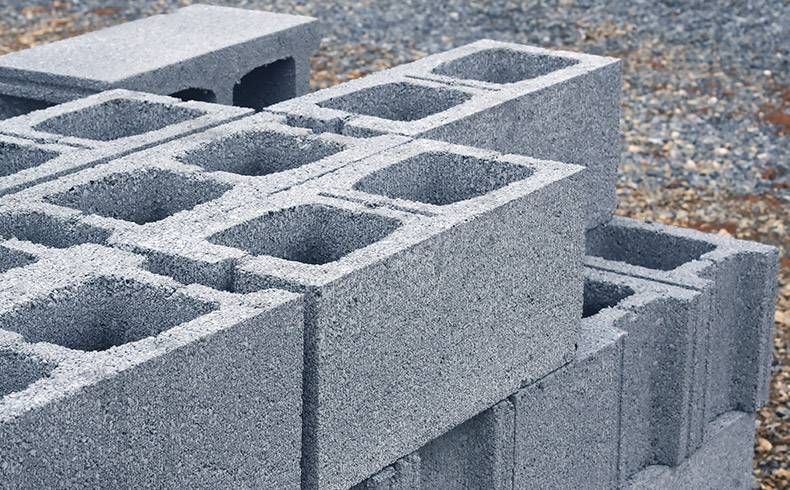
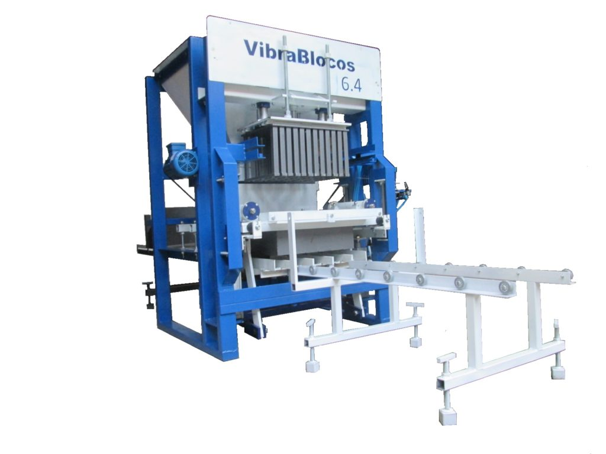

Bem-vindo à GV BLOCOS
Somos a GV Blocos e Pré Moldados, uma referência em qualidade e
excelência na fabricação de blocos de concreto e elementos
pré-moldados.
Explore nossa variedade de produtos e descubra como podemos atender às
suas necessidades de construção.
Compromisso com a Qualidade
Nosso compromisso inabalável com a qualidade é o que nos diferencia.
Cada bloco e elemento pré-moldado que sai de nossa fábrica é
produzido com materiais de primeira qualidade e atende aos mais
rigorosos padrões da indústria.


Tecnologia de Precisão:
A escolha de máquinas e ferramentas apropriadas é fundamental para
garantir que os blocos de concreto produzidos atendam às
especificações técnicas necessárias. Um dos principais benefícios de
investir em equipamentos adequados é a uniformidade na produção.
Máquinas de alta qualidade asseguram que os blocos tenham dimensões
precisas, o que é essencial para garantir que encaixem perfeitamente
durante a construção.
Entregas eficientes
A GV Blocos é uma empresa que se destaca no mercado de construção
civil não apenas pela qualidade de seus produtos, mas também pela
eficiência nas entregas. Com uma trajetória sólida e um compromisso
inabalável com seus clientes, a GV Blocos se tornou um exemplo de
como a logística bem planejada pode fazer a diferença no setor.